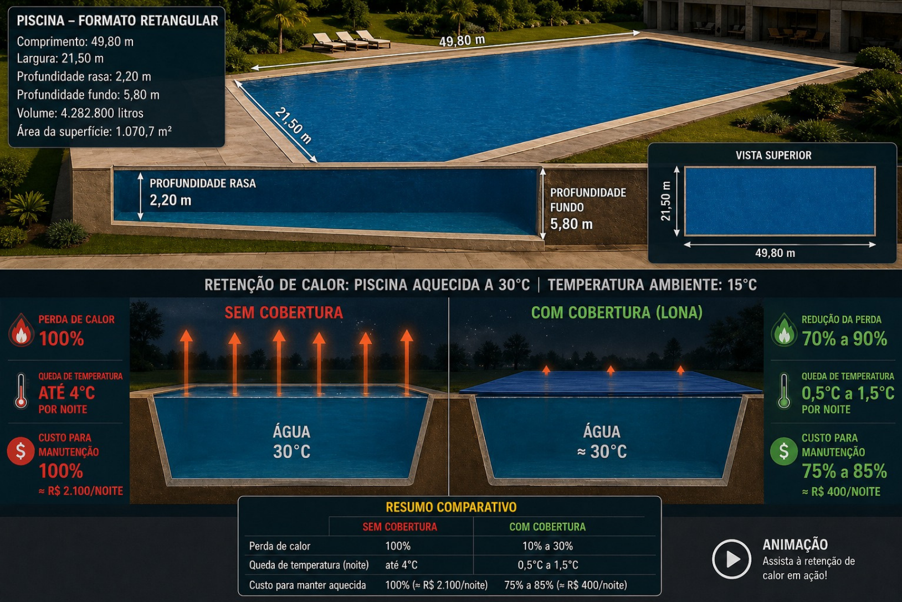

Por que Optar pela Lona Térmica Preta?
A perda de calor em piscinas ocorre principalmente por evaporação, dissipação ambiente e ação do vento. Além de atuar como barreira física contra a evaporação noturna, a equipe optou especificamente pela lona térmica na cor preta devido às suas propriedades ópticas e termodinâmicas.
Diferente das lonas transparentes ou azul-claras (que permitem a passagem da luz solar para o fundo da piscina, mas refletem parte da radiação), o material preto possui um baixo albedo (baixo índice de reflexão), absorvendo praticamente todo o espectro da radiação solar visível e infravermelha que incide sobre a superfície.

Com isso, a própria lona se aquece rapidamente sob o sol e transfere essa energia térmica diretamente para a camada superior da água por condução, trabalhando em conjunto com o sistema de aquecimento solar modular do tipo Girassol.